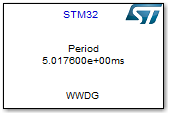
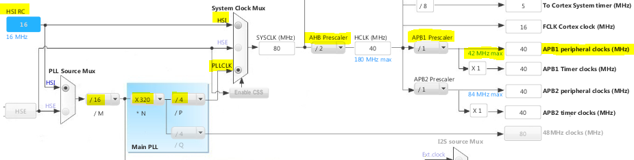
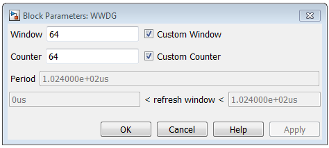
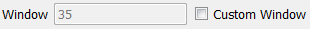
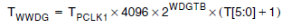
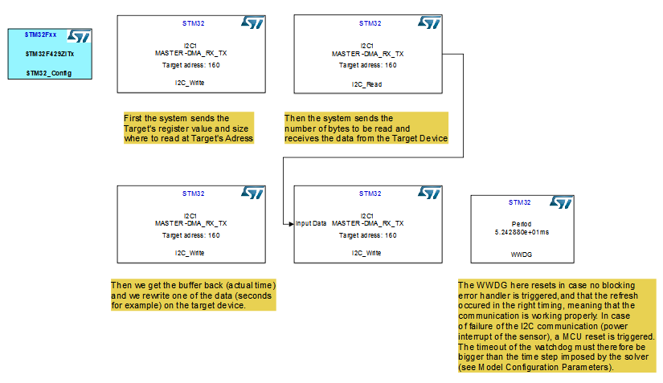
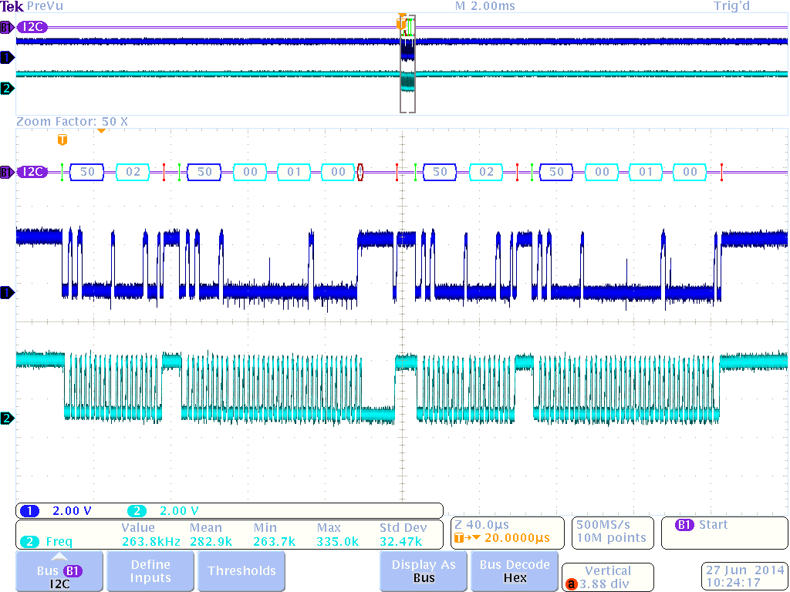
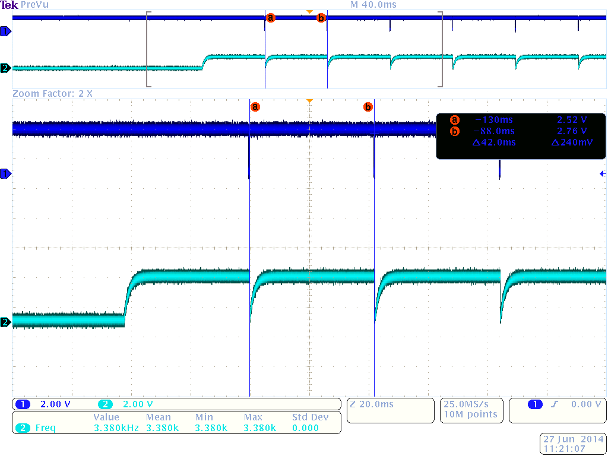
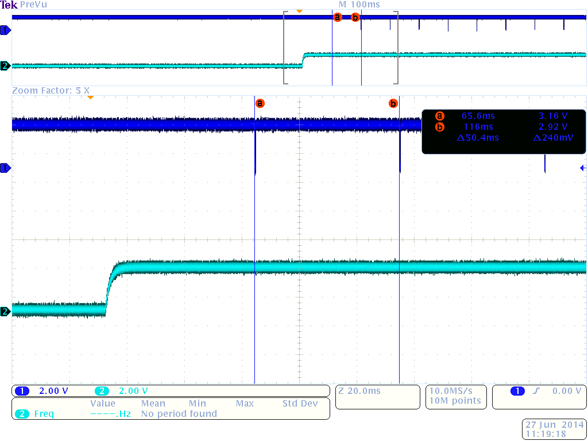
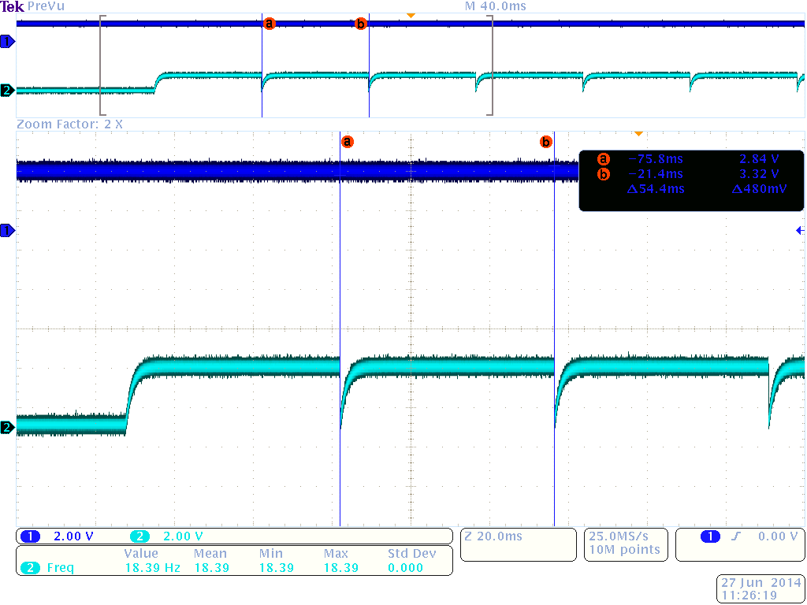

WWDG (Window WatchDoG)
This model is used to trigger a MCU reset when a refresh of the WatchDoG is not done inside a custom time window.
Contents
S-Function
Nb Input: 0
Nb Output: 0

Displayed on the model :
- Period : Period of the timeout calculated in the block
- S Function name : Model Name
WWDG STM32CubeMX configuration
Elements to be taken into account while configuring the WWDG on STM32CubeMX
The WWDG clock is called PCLK1. It is based on a HSI based clock signal obtained after prescaling, which name is APB1 peripheral clock (in yellow in the figure below). PCLK1 is obtained after prescaling APB1 clock by the prescaler value customizable in the STM32CubeMX WWDG applet :

A step of configuration of the main APB1 clock is needed to meet application requirements.
WWDG Block Interface
Main interface of the WWDG model.

Custom Window and Custom Counter
Check boxes to be activated to check for the reliability of the values set in STM32CUbeMX WWDG configuration step. If checked, Custom values are used in the code. If not, the values are set up directly from the .ioc file generated by STM32CubeMX, and are disabled.

Period and Refresh window
These values are calculated to set a timeout and a time window where the refresh must occur to avoid MCU reset.
The refresh window and the period are obtained by calculating first the maximum value of the time window, the timeout or period, as given in the ref. manual RM0090 :

And then the lowest value is generated the same way except that the counter here is replaced in the formula above by window value subtracted from the counter value.
Example using the WWDG and an I2C communication
This example is based on STM32F429i Discovery Kit and a STM32CubeMX configuration file available in the example folder. It is also given in the I2C_Write model help file. The sensor used here for test/debugging purposes is a MikroE RTC CLICK which integrates a PCF8583P,which is a a clock and calendar chip, based on a 2048 bit static CMOS1 RAM organized as 256 words by 8 bits. The ref. manual can be downloaded freely here.

IMPORTANT :
- For the description of the I2C process included in this example, please refer to the I2C_Test example.
- This example implies a 4-wire connection between the board and the sensor, where GND, 3.3V, SDA and SCL from the chip are respectively connected to GND, 3V, PB9 and PB6 on the STM32F429i Discovery Kit as configured by STM32CubeMX.
- In order to have the blocksets processed in the right order, you must set up priorities for each block decreasingly (except for the configuration block).
- You must set the time step of the solver at a value lower than the WWDG Timeout to visualize the case the MCU resets by unplugging the 3V3 wire for example.
Click to open example I2C_Test_WWDG
Results and performance
This part is giving the results obtained on the oscilloscope with this example, in order to give a basis for debugging further applications using this library.
The I2C time sequence is given below, and is the same as in the I2C_Test example.

A scope is connected to the VRST pin of the board, which is pulled down to 0 when a MCU reset occurs. The timeout is 52.4ms and the window is therefore 46.70 (ms) < refresh < 52.43 (ms).
Three cases are therefore monitored on the oscilloscope and given in the figures below, depending on three cases regarding the time step of the solver.
1. The solver is set to 0.04s, which is shorter than the window values:

Even though the I2C communication is operating properly, a reset is triggered as the refresh of the counter happens before the time window.
2. The solver is set to 0.05s, which is inside the window values:

3. The solver is set to 0.06s, which is greater than the window values:

A reset is always triggered before any kind of activity on the I2C line because the timeout is reached before a call of the I2C_Master_WWDG_ste^p function.